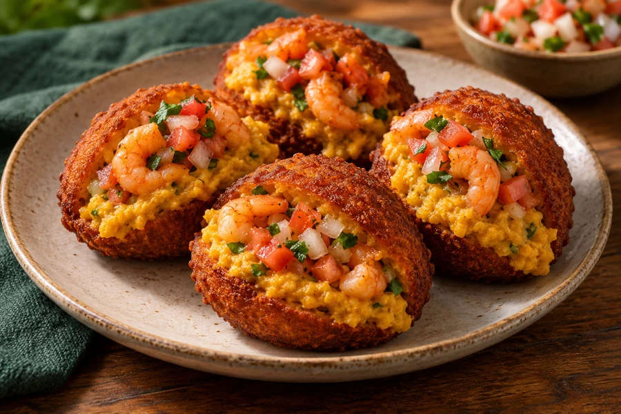
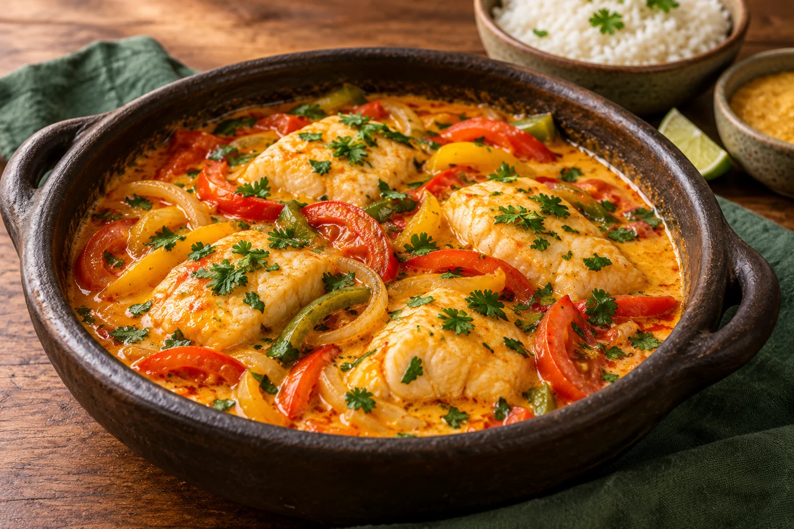
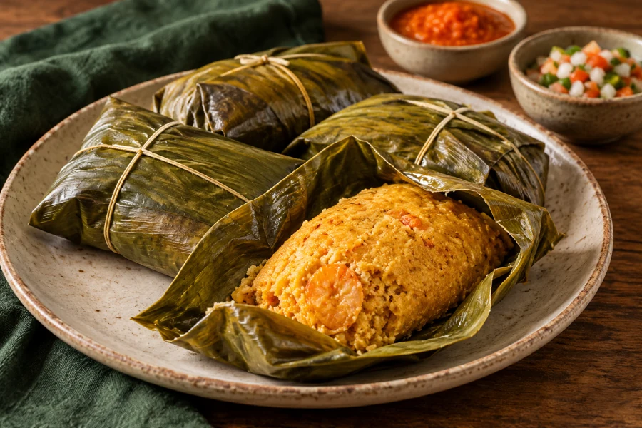
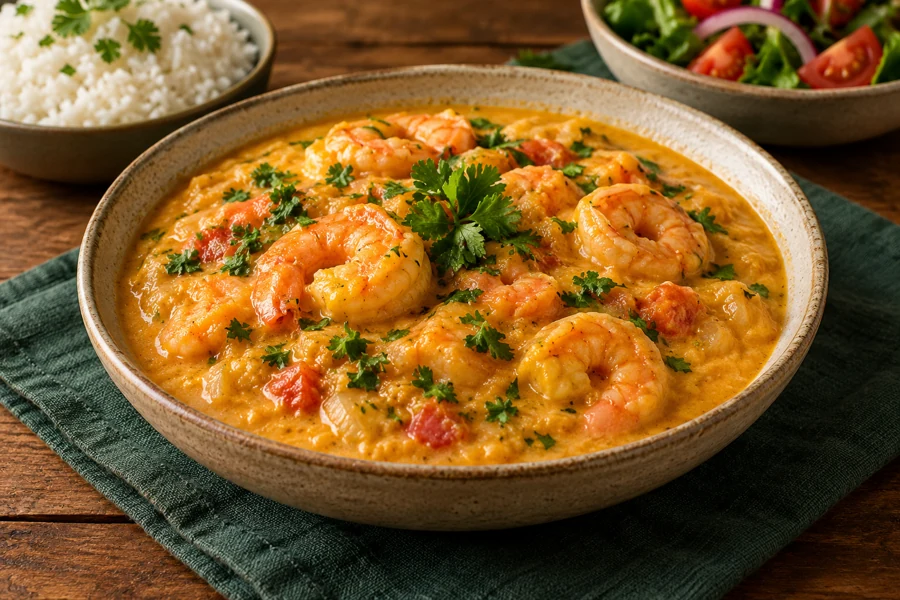
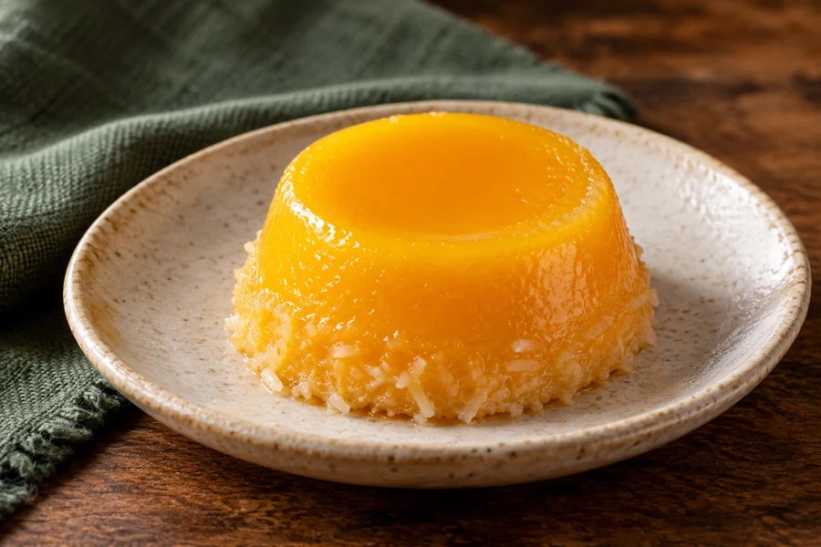
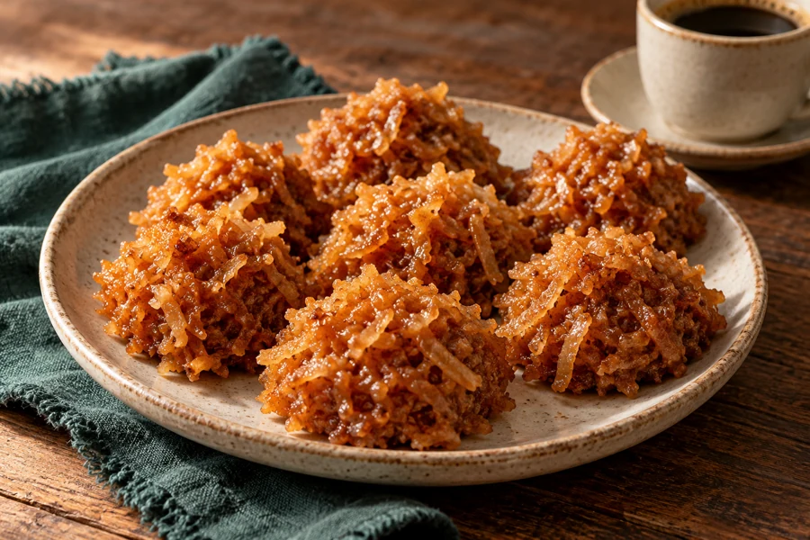

Acarajé
Crujiente por fuera, lleno de sabor.
LOS SECRETOS DE LA COCINA DE BAHÍA
30 RECETAS SALADAS ILUSTRADAS,
CON INGREDIENTES Y PASOS EN ESPAÑOL.
Del acarajé a la moqueca: descubre qué necesitas y cómo preparar cada receta. ¿También quieres el postre? Elige la colección con 50 dulces adicionales.
Desde US$ 9,90 · Sin suscripción
El libro de dulces se incluye únicamente en la colección completa.
UN VISTAZO A LA COLECCIÓN

Crujiente por fuera, lleno de sabor.

Coco, dendê y cilantro.

La tradición, cocida al vapor.

Una crema para compartir.

Un vistazo al libro de dulces.

Coco y caramelo, en el extra dulce.
Muestra de ambos recetarios. Las imágenes son ilustrativas, generadas con IA.
Consulta qué necesitas, el rendimiento y el tiempo estimado antes de empezar.
Sigue una secuencia numerada, con consejos y una imagen del plato como referencia.
Explora preparaciones baianas, clásicos brasileños y adaptaciones para cocinar en casa.
MIRA EL INTERIOR ANTES DE ELEGIR
Ingredientes, instrucciones y una referencia visual en el mismo lugar. Toca una página para ampliarla.
ELIGE TU RECETARIO
Producto digital · Precios en dólares estadounidenses · Un solo pago
US$ 9,90
Pago único
QUIERO LAS 30 RECETAS →Incluye únicamente el recetario salado.
US$ 14,90
Solo US$ 5,00 más que el recetario salado
QUIERO LAS 80 RECETAS →Incluye los dos recetarios. Pago único.
COMPLETA TU MENÚ POR US$ 5,00 MÁS
Quindim, cocada, manjar y más: añade el libro de 50 dulces eligiendo la colección completa por US$ 14,90 en total.
Sí, quiero salado + dulce →El pago se realiza en Hotmart. Consulta allí las condiciones de pago, entrega y reembolso.
30 recetas saladas o el paquete con 80 recetas.
Revisa los datos y las condiciones antes de completar el pago.
Sigue las instrucciones de acceso de Hotmart tras la confirmación del pago y consulta tus PDF.
La de US$ 9,90 incluye 30 recetas saladas en un PDF de 39 páginas. La de US$ 14,90 añade el PDF de 50 dulces: 80 recetas y 98 páginas en total.
Sí, en español latinoamericano. Conservamos nombres tradicionales como acarajé, moqueca y quindim.
Son archivos digitales en PDF, sin envío físico. La compra se realiza en Hotmart; sigue las instrucciones de acceso indicadas por la plataforma después de la confirmación del pago.
Las recetas tienen pasos numerados. Algunas técnicas requieren práctica. Ingredientes como dendê o tapioca granulada pueden necesitar tiendas especializadas y no siempre tienen sustitutos equivalentes.
Las imágenes son ilustraciones generadas con inteligencia artificial. Las fórmulas no han sido probadas en cocina por el editor; los resultados pueden variar según ingredientes, equipo y técnica.
No. El libro de 50 dulces se incluye únicamente en la colección completa de US$ 14,90.